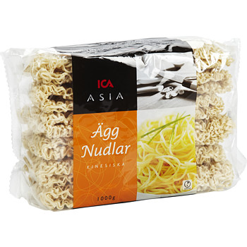
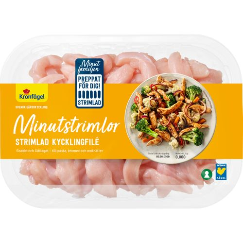
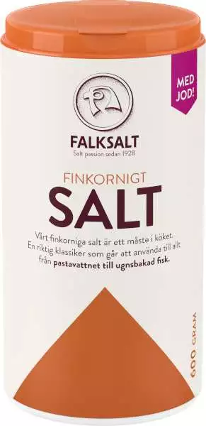
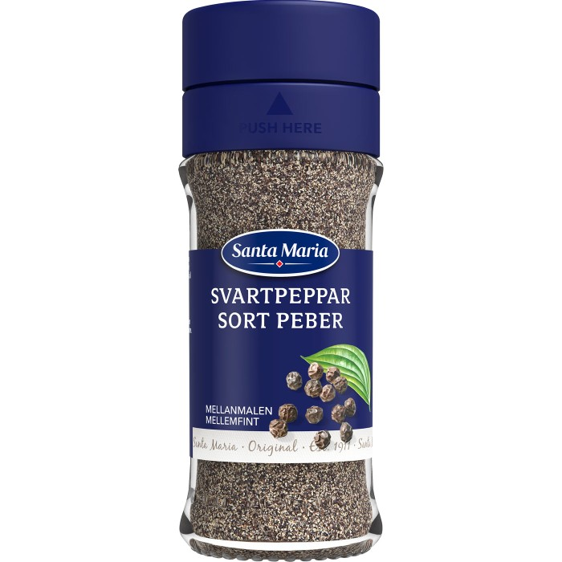
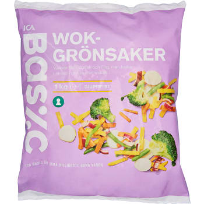
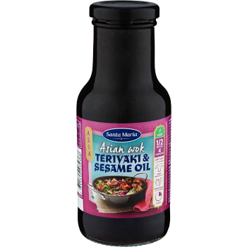
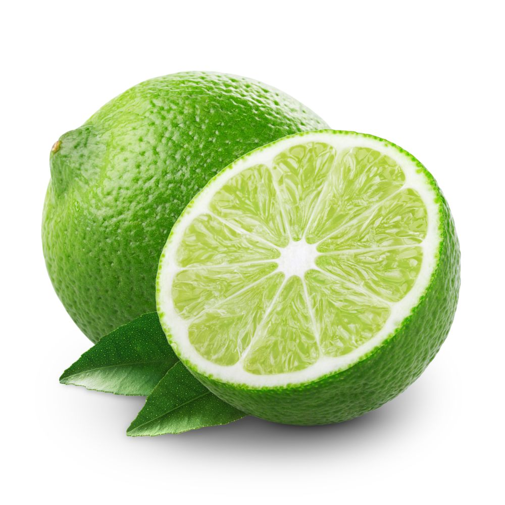
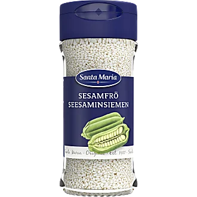

Kyckling med Woksås och Nudlar

En färdig woksås på flaska är icke att underskatta.
Den omger både kycklingen och grönsakerna fint i pannan, och det som får den lilla extra välbehövda syran är limen vid sidan av.
Ack så viktig!
Protioner: 4st
Tid: 30 min
- 4 port äggnudlar eller ris
- 600 g strimlad kycklingfilé
- 1 msk olja
- Salt
- Peppar
- 500 g wokgrönsaker
- 1 förp woksås (gärna asian woksauce teriyaki, 250 g)
- 1 lime
- 1 msk sesamfrö
Bilder av ingredienser
       - Tina kycklingen
- Koka nudlarna enligt anvisningen på förpackningen
- Stek kycklingen i hälften av oljan i en stekpanna. Krydda med salt och peppar och lägg upp på en tallrik
- Stek wokgrönsakerna i resten av oljan i stekpannan. Rör kyckling och sås och låt det bli varmt
- Skär limen i klyftor
- Serveringsförslag: Servera kycklingwoken med nudlar och sesamfrö